1.1 Where the sun goes Why orientation is the first decision you make
Think of the best room you've ever sat in on a winter morning. The sun was probably in it: a long patch of light across the floor, warm enough that you moved your chair into it. Now think of the worst room you've sat in on a summer afternoon. Glass facing west, the blinds down, the air conditioning losing. The difference between those two rooms usually isn't the equipment. It's which way they face.
Before you choose a material or draw a wall section, the sun has already made half your decisions for you, if you know where it goes. That's what this lesson is about: how the sun moves across the sky through the day and the year, what that means for each face of a building, and how builders from ancient Greece to China to Wisconsin turned that knowledge into plans.
How the sun moves
Start with one fact. The Earth's axis is tilted, by about 23 and a half degrees. As the Earth circles the sun, the tilt leans your half of the planet toward the sun for part of the year and away from it for the rest. Leaning toward it is summer: the sun climbs high and the days are long. Leaning away is winter: the sun stays low and the days are short.
Picture yourself in Boston, a little above 42 degrees north. At noon on the longest day in June, the sun stands about 71 degrees above the horizon, not far from overhead. At noon on the shortest day in December, it reaches only 24. At the equinoxes in March and September it sits in between, at about 48. There's an easy way to remember this. At the equinox, the noon sun stands at 90 degrees minus your latitude, and the solstices add or take away 23 and a half.
The sun also moves where it rises and sets. In June it comes up about 30 degrees north of east, swings high across the southern sky, and goes down about 30 degrees north of west. That gives Boston about 15 hours of daylight, and for the first and last hours of the day the sun is actually behind a south-facing house, shining on its north side. In December it rises about 30 degrees south of east, stays low in the south all day, and sets south of west, after only about 9 hours.
So the summer sun is high and wide, and the winter sun is low and stays in the south. Almost everything else in this chapter follows from that one sentence.
What it means for each face
Now put a plain box building under that sky and ask which faces get the sun. I've worked this out for a clear day at Boston's latitude, and the answer surprises most people.
In December, the south wall is the star. The low sun strikes it almost head on all day, and it collects more sunlight than any other surface of the building, more than twice as much as the roof. The east and west walls get a little in the morning and the afternoon. The north wall gets almost nothing.
In June, the pattern turns over. The high noon sun strikes the south wall at a glancing angle, so the south wall collects less sun than it did in December, about 40 per cent less. The roof now takes the most by far, nearly three times as much as the south wall. And the east and west walls each collect about half as much again as the south, because they catch the low morning and evening sun almost head on, when it's hardest to keep out.
Put those two days side by side and you have the whole logic of orientation. A south face is generous in winter and modest in summer, which is exactly what you want in a place with cold winters and warm summers. East and west faces do the opposite: little help in winter and a lot of heat in summer, arriving low, where a roof edge can't stop it. West is the worse of the two, because its sun comes in the afternoon, on top of a whole day's heat.
One note for the southern hemisphere. Everything turns around. In Sydney or Buenos Aires the winter sun is in the north, so there you face north.
The best examples
People worked this out long before anyone could calculate it.
In classical Greece, Xenophon tells us that Socrates advised facing a house to the south, because then the winter sun reaches into the porches, while the summer sun passes high over the roof and leaves them in shade. Build the south side tall to catch the sun, he added, and the north side low to keep off the cold winds.
You can see that advice built at Olynthus, a town in northern Greece laid out in the late fifth century before our era. Its houses, each about 17 metres square, stood in blocks of ten. Nearly every one had its courtyard on the south, a covered porch called a pastas along the north side of the courtyard, and the main rooms behind the porch, looking south into the light. Model those houses on a computer and you find that at midwinter only the south-facing courtyards get any direct sun at all, and that on a summer afternoon the porch roughly triples the shade.
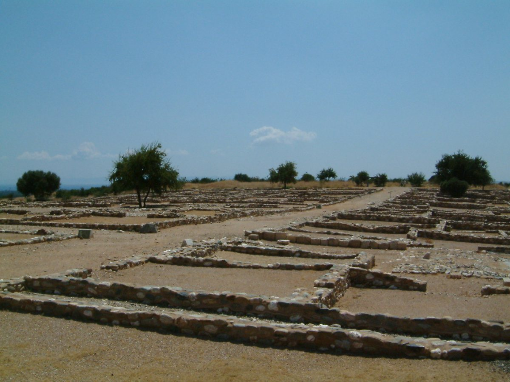
{kind=link}
About four centuries later, the Roman architect Vitruvius went a step further and oriented each room by what it was used for. Winter dining rooms faced the south-west, to catch the late sun at supper time. Bedrooms and libraries faced east, for the morning. Summer rooms faced north, where the sun never stares in.
In China, the traditional courtyard house makes the same idea into a plan. The main hall stands on the north side of the courtyard and faces south, so the most important rooms get the best of the winter sun. And in 1944, Frank Lloyd Wright designed a house in Wisconsin, at almost exactly Boston's latitude, as a half circle of glass opening to the south, with an earth bank heaped against its north side to turn the winter wind. He called it the Solar Hemicycle. We'll come back to its roof edge in the next lesson, because Wright got it exactly right.
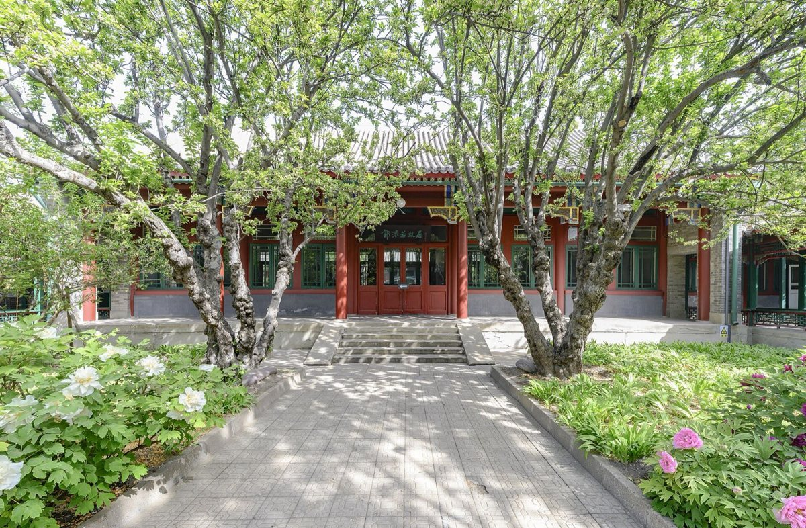
{kind=link}
Rules of thumb
Here is how to use all this on a project.
One. Face the long side of the building toward the equator, which means south in the northern hemisphere, and stretch the plan from east to west. The more wall you give to the south, the more winter sun you can gather, and the less low summer sun you have to fight.
Two. You have some room to move. Turning the building 20 degrees away from true south costs you only about 6 per cent of the winter sun on that wall, so let the site and the street have a say. At 30 degrees the loss is about 12 per cent, and at 45 degrees about a quarter.
Three. Put the rooms you live in on the sunny side, and the rooms that don't need the sun, such as stairs, storage and bathrooms, on the north, where they act as a buffer.
Four. Keep east glass modest and west glass more modest still, and plan to shade it with something that can handle a low sun, not just a roof edge.
Five. Find true south, not compass south. In Boston a compass points about 14 degrees west of true north, and in other places the difference can be larger or run the other way. Most site surveys show true north, so start from the survey.
Where it fails
Orientation only works if the sun can reach the wall. A tall neighbour, a hillside or a row of evergreens can put a south façade in winter shadow, so look at what stands to the south of your site before you commit. And in hot climates the priority turns around. There the job is to keep the sun off, and near the equator, where the noon sun is almost overhead for much of the year, the roof matters more than any wall. We'll come to that later in this chapter.
Recap
To sum up. The sun stands high in summer and low in winter, and in summer it rises and sets well north of east and west, while in winter it stays in the south. That makes a south wall generous in winter and modest in summer, and east and west walls the reverse. So face the long side south, stretch the plan east to west, and be careful with glass to the west.
Check yourself
First question. Why does a south wall collect more sunlight in December than in June?
Because the winter sun is low and stays in the southern sky all day, so it strikes the wall nearly head on. The summer sun is high, strikes at a glancing angle, and spends the early morning and the evening behind the house.
Second question. Which walls are hardest to protect from the summer sun, and why?
East and west, because the sun reaches them low, early and late in the day, where a roof edge can't block it. The west gets its sun on top of the afternoon heat.
Third question. You are designing a house in Sydney. Which way should the living rooms face?
North. In the southern hemisphere, the winter sun is in the north.
Sources and further reading
- Xenophon, Memorabilia 3.8.8–10, and Oeconomicus 9.4.
- Vitruvius, On Architecture, book VI, chapter 4, translated by M. H. Morgan.
- Olynthus: N. Cahill, Household and City Organization at Olynthus (Yale, 2002). The midwinter and summer shading results are from Fitzjohn and Wilson's 2025 simulation, as recorded in the research edition, chapter 1.
- The Solar Hemicycle (Jacobs II): research edition, chapter 4.
- Sun angles, day lengths and clear-day sunlight on each face: computed for this lesson with the ASHRAE clear-sky model at 42.4 degrees north. Compass declination: World Magnetic Model 2025.
- Further reading: V. Olgyay, Design with Climate (Princeton, 1963); G. Z. Brown and M. DeKay, Sun, Wind and Light; K. Butti and J. Perlin, A Golden Thread (1980).
1.2 The overhang Shade that knows the seasons
Stand under the eaves of an old Japanese house on a July afternoon. The roof reaches out far beyond the wall, and the wooden veranda beneath it lies in deep shade, even though the day is blazing. Come back in January and the same veranda is full of low sun, reaching across the floorboards and into the rooms. Nobody has moved anything. The edge of the roof simply knows the difference between summer and winter.
In the last lesson you saw that the summer sun is high and the winter sun is low. This lesson turns that into something you can draw: the overhang. You'll learn how deep to make it, how that changes with latitude, why it only works on one side of a building, and the one month of the year it gets wrong.
How it works
An overhang is anything that projects out above a window: a roof edge, a balcony, a canopy, a shelf of louvres. It works because of an angle. At noon, the sun's rays come down at the sun's height above the horizon, 71 degrees in June at Boston's latitude and 24 in December. A steep ray, like June's, hits the underside of even a modest overhang before it can reach the glass. A shallow ray, like December's, slides underneath and lands deep inside the room.
It's the peak of a baseball cap. Tip your head back toward a high sun and the peak shades your eyes. Face a low sun and it shines straight in underneath.
So an overhang is a filter that sorts the sun by its angle. The only question is where to set the filter, and that comes down to one ratio: how far the overhang reaches out, compared with how tall the window is below it.
How deep
Here's the rule. For a window to be completely shaded at noon on the longest day, the overhang has to reach out a certain fraction of the window's height, and at Boston's latitude that fraction is about a third. A window 2 metres tall wants an overhang about 70 centimetres deep. A six-foot window wants two feet.
And here's the beautiful part. In December that same overhang shades only the top sixth or so of the window at noon. The rest of the glass gets full winter sun. You've built a seasonal switch with no moving parts.
The fraction changes with latitude, because the closer you are to the equator, the higher the summer sun climbs. At 30 degrees north, in New Orleans or Cairo, the June noon sun is nearly overhead, and an overhang about an eighth of the window's height will do. At 40 degrees, in Madrid or Beijing, it's about three tenths. In Boston it's a third, and at 50 degrees, around Prague or London, it's a half.
You might wonder why I keep saying noon. Here's a small surprise that makes the rule work. What matters to an overhang isn't simply how high the sun is, but its angle seen from the side, the way the overhang itself sees it. On a south wall in June, that side-on angle is at its lowest at noon. Earlier and later in the day the sun is lower in the sky, but it has also swung off to one side, and seen side-on it looks steeper: 74 degrees at ten in the morning, 79 at nine, until it slips behind the house altogether. So an overhang sized for the June noon shades the whole window all day. At the equinoxes the side-on angle holds at 48 degrees from morning to evening. And in December it's lowest early and late, so the winter sun reaches in even deeper.
The best examples
Frank Lloyd Wright's Solar Hemicycle, the house from the last lesson, is the cleanest example I know. Its south wall is glass 14 feet tall, and the roof above it reaches out 5 feet. At that latitude, 43 degrees north, the overhang you need to shade 14 feet of glass at the midsummer noon works out at 5 feet. Wright built 5 feet. In December the same eave shades only the top 2 feet of the glass, and the sun pours across the floor onto the concrete slab.
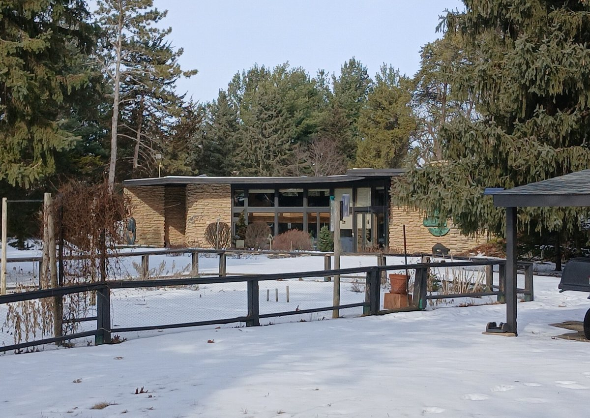
{kind=link}
He had been doing it for decades. At the Robie House in Chicago, finished in 1910, low roofs reach far out beyond the walls on every side, and the long bands of windows on the south face sit in their shade through the summer.
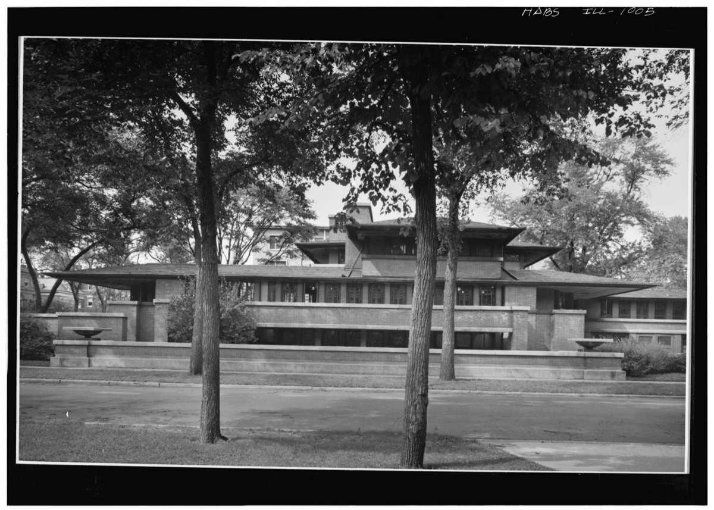
In Japan, the deep eaves over the engawa, the wooden veranda along the garden side of traditional houses and temples in Kyoto, do two jobs at once. They shade the high summer sun, and they keep the heavy rains off the timber walls and paper screens. The veranda beneath becomes a place to sit, half inside and half out.
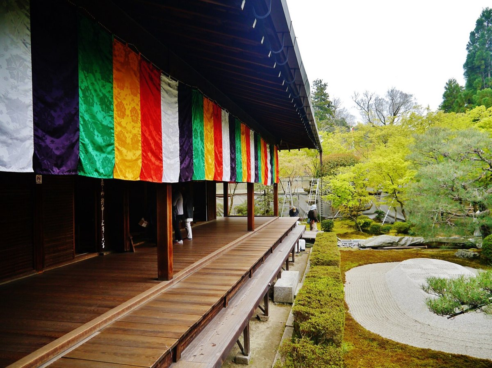
{kind=link}
In classical Greece, the porch did the work. At Olynthus, the covered pastas along the north side of each courtyard shaded the front of the house in summer and let the low winter sun into the rooms behind it.
And in Rio de Janeiro in the late 1930s, the Ministry of Education and Health turned the overhang into an entire façade: rows of horizontal louvres standing off the sun-facing wall, each blade turned by the office workers with a lever, to one of three positions. It's called the brise-soleil, the sun-breaker, and it became one of the most copied shading devices of the twentieth century.
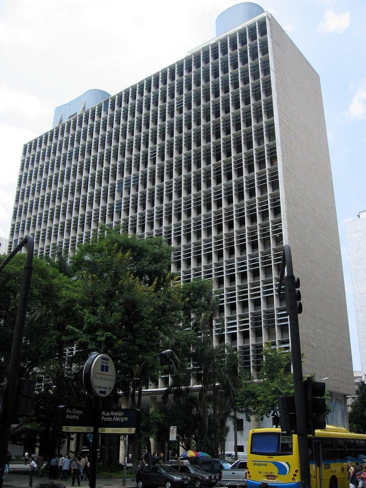
{kind=link}
Rules of thumb
One. Use horizontal overhangs on the side that faces the equator: south in the northern hemisphere, north in the southern. That's where the sun is high when you want shade, and low when you want warmth.
Two. Size it from the window, not from the roof. Measure from the underside of the overhang down to the sill, and take the fraction for your latitude: about a third in Boston.
Three. Carry the overhang past the window on both sides, by roughly as much as it projects, because in the morning and afternoon the sun comes in at an angle.
Four. On east and west walls, a horizontal overhang does very little, because the sun there is low. Use vertical fins, deep reveals, adjustable outside blinds, or simply less glass.
Five. Shade outside the glass whenever you can. An outside shade stops the heat before it enters. An inside blind stops the glare, but by then much of the heat is already in the room.
Where it fails
The overhang has one blind spot, and it's the calendar. The sun stands just as high in early August as in early May, so any fixed overhang shades those two months exactly alike. But August is far warmer than May, because the land and the sea take weeks to warm up. The fix is shade that changes with the season: a deciduous vine on a pergola, which leafs out as the weather warms and drops its leaves for winter; an awning you can roll out; or louvres you can turn, as in Rio.
And draw the sun before you detail the shade. Rio sits almost on the Tropic of Capricorn, so in its summer the sun spends most of the day on the far side of that building, and the famous louvres get little direct sun just when you'd expect them to be working. A quick sun path would have shown it.
Recap
To sum up. An overhang sorts the sun by its angle: steep summer rays hit it, and low winter rays pass beneath. Size it from the window's height: about a third in Boston, less toward the equator, more toward the poles. Use it on the side that faces the equator, use fins or adjustable shades on east and west, and give late summer a vine or a blind.
Check yourself
First question. A south window in Boston is one and a half metres tall. About how deep should its overhang be?
About half a metre, a third of the window's height.
Second question. Why won't a roof edge shade a west window on a summer afternoon?
Because the afternoon sun is low in the west, so its rays pass under any horizontal projection.
Third question. Your client says the south rooms are lovely in May but too warm in August. What would you add?
Shade that changes with the season, such as a deciduous vine on a pergola, an awning, or adjustable louvres, because a fixed overhang treats May and August alike.
Sources and further reading
- Overhang fractions and sun angles: computed for this lesson from solar geometry.
- The Solar Hemicycle (Jacobs II): dimensions as recorded in the research edition, chapter 4, from Wikipedia, Herbert and Katherine Jacobs Second House.
- The Robie House: photograph by Cervin Robinson, 18 August 1963, Historic American Buildings Survey, HABS IL-1005, Library of Congress; public domain.
- The Kyoto threshold and the engawa: research edition, chapter 2. Olynthus: research edition, chapter 1.
- The Rio ministry: MoMA object 82483; Almodóvar Melendo, Cabeza Lainez and Jiménez Verdejo, Journal of Asian Architecture and Building Engineering 7(1), 2008.
- Further reading: V. and A. Olgyay, Solar Control and Shading Devices (Princeton, 1957); N. Lechner, Heating, Cooling, Lighting.
1.3 Catching winter sun Glass, mass and a lid for the night
Think of a car parked in a sunny lot on a cold January day. Open the door at noon and the air inside is warm, even hot, while your breath still shows outside. Come back at midnight and it's as cold inside as out. In those twelve hours the car has shown you both halves of solar heating. The glass let the sun in and kept its heat from blowing away. But there was nothing inside heavy enough to hold on to that heat, and nothing to cover the glass once the sun had gone.
In the first two lessons you learned where the winter sun is and how to let it reach a south wall. This lesson is about what happens once it's through the glass: how to catch it, store it and keep it, so that the sun warms the house into the evening and not just at noon. There are only four parts, and every sun-heated building, ancient or modern, is some arrangement of the same four.
How it works
The first part is the glass. Sunlight passes easily through ordinary glass. When it strikes the floor or a wall it turns into heat, and that heat has a much harder time getting back out. The glass stops the warm air from blowing away, and it blocks most of the heat that warm surfaces give off. While the sun is on it, a south window takes in several times more heat than it loses.
The second part is mass: heavy material the sun can fall on, such as concrete, brick, stone or tile. Think of a cast-iron skillet next to a thin aluminium pan. The skillet takes longer to heat up, and it stays hot long after you turn off the stove. Mass does that for a room. It soaks up the sun through the middle of the day, so the room doesn't overheat, and it gives the heat back slowly through the evening. Without it you get the car: too hot at two, cold by eight.
The third part is insulation. Heat always leaks toward the cold, through the walls, the roof, the floor and every gap. The less a house leaks, the further a day's sun will carry it.
And the fourth part is a lid for the night. Glass is by far the leakiest part of a wall. Once the sun sets, the same window that gathered heat all day starts to lose it, and it goes on losing it through the long winter night. In Boston, about two-thirds of the heat a window loses in January goes out after dark. A good insulating shutter, closed at dusk, cuts that night loss by three-quarters or more, and an insulated shade by about two-thirds. Today's low-emissivity double and triple glazing does part of the same job without anyone having to remember.
Glass lets it in. Mass stores it. Insulation keeps it. The lid stops the night from taking it back.
Three ways to arrange it
The simplest arrangement is called direct gain, and you already know it from the first two lessons. The room itself is the collector. South glass lets the sun in, a heavy floor stores it, and an overhang keeps the summer sun out. Here's a useful piece of geometry. At Boston's latitude, the December noon sun reaches into a room about two and a quarter times as far as the top of the window is above the floor, a little less once the overhang is on. A window that tops out at 2.4 metres puts winter sun on the floor more than four metres back from the glass. That's where the mass belongs.
The second arrangement is the solar wall, often called a Trombe wall. Instead of letting the sun into the room, you stop it at a thick, dark masonry wall standing just behind the glass. The wall heats up on its outer face, and the heat creeps through it at about an inch an hour. So a wall 8 inches thick delivers the noon sun to the room at around eight in the evening, just when you want it. You give up the view, and you gain a room without glare or faded furniture. Some solar walls have openings at the top and the bottom, so the warm air in the gap behind the glass can flow into the room during the day as well.
The third arrangement is the sunspace: a glazed room built onto the south side of the house, like a conservatory. It collects the sun, and doors or windows let its warm air into the house when you want it and shut it out when you don't. It's also a lovely place to sit on a bright February morning. Its great weakness is summer, when it overheats unless it's well shaded and well vented.
The best examples
The Romans put the first two parts to work in their baths. The architect Vitruvius advised that the hot rooms of a bath should face the south-west, toward the winter afternoon sun, because people bathed from midday into the evening. At Ostia, the port of Rome, the Forum Baths do exactly that. Their heated rooms line a long south-west front that was once filled with huge windows, and they must have been glazed, probably with glass set in wooden frames. The floors stood on brick piers over a space heated by furnaces, and they were thick enough to hold the heat. Work out the heat balance of one of those warm rooms at midday in December and you find that with the window open the room would lose about ten times the heat the sun brought in. With the window glazed, the sun brought in about six times what the room lost. The glass turned a loss into a gain.
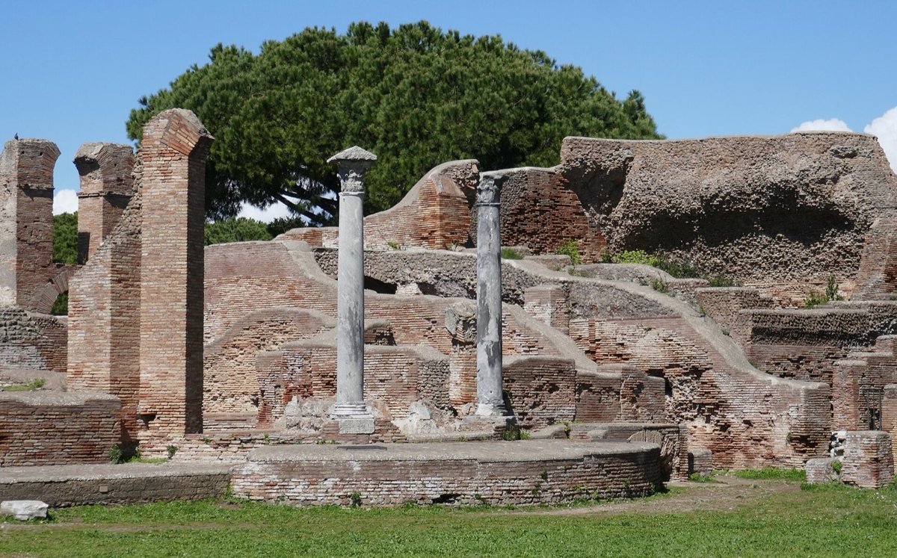
{kind=link}
In the French Pyrenees, from the late 1960s, the engineer Félix Trombe and the architect Jacques Michel built houses with a heavy south wall standing behind glass, and openings at its top and bottom that let the warmed air circulate into the rooms. Their 1974 building at Odeillo is now a protected historic monument, and the solar wall still carries Trombe's name.
And in 1977, in Regina, Saskatchewan, where the winters are long and bitterly cold, a team of Canadian researchers took a different path. Rather than adding more glass, they wrapped a house in insulation, about R-40 in the walls and R-60 in the ceiling. They sealed it so tightly that fresh air had to be brought in through a heat exchanger, which warmed the incoming air with the stale air going out. Most of its windows faced south. The house lost only about a third as much heat for each degree of cold as an average Regina house of the day. The solar collectors on its roof proved costly to keep running and were later taken out. The Saskatchewan Conservation House became one of the ancestors of today's Passive House standard, and it taught the order that every lesson in this book depends on: keep the heat first, then catch the sun.
Rules of thumb
One. Insulate and seal before you add glass. In a leaky house the sun's help is gone by bedtime.
Two. Size the south glass to the floor. Up to about 7 per cent of the floor area, the ordinary mass of a house, its framing, plaster and furniture, can absorb the sun without overheating. Beyond that, add mass, and stop at about 12 per cent, where glare and fading become a problem.
Three. Put the mass where the sun lands: bare floors of concrete, tile or stone, about 4 inches thick, and dark where the sun strikes them. For every square metre of glass beyond that 7 per cent, give the sun about five or six square metres of mass to fall on.
Four. Give the glass a lid. Close insulating shades or shutters at dusk, or choose glass good enough to need less help.
Five. Keep the glass vertical and shaded. Vertical south glass is easy to shade in summer, loses less heat at night than sloping glass, and doesn't hold snow. Size its overhang as in lesson two.
Where it fails
The usual failure is too much glass and too little mass. The room overheats by early afternoon, even in January, the furniture fades, and by evening the heat has gone. The next failure is the lid. Movable insulation only works if someone closes it, and people stop. Even in Saskatchewan, the insulating shutters leaked, and in use they gave only a fraction of the insulation they were designed for. And some winters are simply grey. Where the winter sky is mostly overcast, south glass gathers far less, and insulation does more of the work than the sun can.
Recap
To sum up. Glass lets the winter sun in, mass stores its heat, insulation keeps it, and a lid on the glass stops the night from taking it back. Direct gain, the solar wall and the sunspace are three ways to arrange those four parts. Insulate first, size the south glass to the floor, and put heavy, bare surfaces where the sun lands.
Check yourself
First question. A car parked in the winter sun is warm at noon and freezing by midnight. Which two parts of a sun-heated house is it missing?
Mass to store the heat, and a lid, or insulation, to keep it through the night.
Second question. You add large south windows to a timber-framed room with carpeted floors. What goes wrong, and what would you change?
It overheats in the afternoon and cools quickly at night, because nothing heavy stores the sun. Keep the glass modest, or put bare masonry, tile or concrete where the sun lands.
Third question. Why does a solar wall warm the room in the evening rather than at noon?
Because heat moves slowly through masonry, about an inch an hour, so the noon sun takes hours to reach the inside face of the wall.
Sources and further reading
- Sun-tempering, the 7 and 12 per cent limits, and mass: Passive Solar Industries Council and NREL, Passive Solar Design Strategies: Guidelines for Home Building (1991), pages 23 to 25; Whole Building Design Guide, Passive Solar Heating.
- Night losses: E. Mazria, The Passive Solar Energy Book (Rodale, 1979), on Boston in January. Shades and shutters: Cornell Cooperative Extension, Energy-saving window treatments.
- Solar walls and sunspaces: US Department of Energy, Energy Saver; Passive Solar Design Strategies, pages 27 to 31.
- The Forum Baths at Ostia: ostia-antica.org, Terme del Foro; J. W. Ring, "Windows, Baths, and Solar Energy in the Roman Empire", American Journal of Archaeology 100 (1996). Vitruvius, On Architecture, book V, chapter 10.
- Odeillo: Ministère de la Culture, Mérimée PA66000030; F. Trombe and J. Michel, US patent 3,832,992 (1974).
- The Saskatchewan Conservation House: H. Orr's account in Passipedia, Passive House Institute; R. W. Besant, R. S. Dumont and G. Schoenau, Energy and Buildings (1979); Daily Commercial News, "Passive House on the prairie" (2017), on the collectors' removal.
- The depth of winter sun in a room, and the gain through south glass while the sun is on it: computed for this lesson from solar geometry and the ASHRAE clear-sky model at 42.4 degrees north, for ordinary double glazing.
- Further reading: E. Mazria, The Passive Solar Energy Book; N. Lechner, Heating, Cooling, Lighting.
1.4 Too much sun The roof as umbrella, and building in the tropics
Sit in a room under a bare metal roof at noon in Kuala Lumpur. The air may be only a little warmer than it is outside, but you can feel heat pouring down onto the top of your head, the way you feel the heat of a grill. Now walk next door, to an old Malay house raised on posts. Under its steep, high roof, in the shade of its deep eaves, with the shutters open and air moving under the floor and through the rooms, the same noon is bearable. The air may be no cooler than next door. What has changed is what your body feels: no heat pouring down from above, and air moving across your skin.
The first three lessons treated the sun as something to welcome in winter. In much of the world it's never welcome. This lesson is about building where the sun is the problem all year round: why the roof takes most of it, how to turn the roof into an umbrella, and how the houses of the hot, humid tropics stay comfortable without machines, and where they don't.
How it works
Near the equator the noon sun is nearly overhead all year. In Kuala Lumpur, three degrees north, it never stands lower than about 63 degrees at noon, and for part of the year it's actually in the northern half of the sky. So the sun spends most of the day high above the roof. It reaches the east and west walls only early and late, but it strikes them almost head on.
I worked out a clear day at Kuala Lumpur's latitude, the same way as for Boston in lesson one. Month after month, the roof collects the most sunlight. It takes about twice as much as an east or west wall, and over the year about three times as much as a north or south wall. The north and south walls each have a season: in December the south wall gets more sun than an east or west wall, and in June the north wall does. But that sun comes from high in the sky for most of the day, so an overhang about half the window's height stops most of it. The east and west walls take the low morning and afternoon sun head on, every day of the year, and no overhang can stop it.
So in the tropics the roof is the main thing the sun strikes, and it can get very hot. At midday in summer, a black roof can reach 75 to 85 degrees Celsius, while a cool white roof stays around 45. And a hot roof doesn't only warm the air. Its underside, or a hot ceiling beneath it, radiates heat straight down onto the people below. That's the grill you felt in the first room.
Think of the difference between a sun hat and a beach umbrella. A hat sits right on your head, and on a scorching day the top of your head gets hot. An umbrella shades you just as well, but the air moves freely between you and the hot fabric and carries the heat away. A good tropical roof is an umbrella, not a hat, and it has three layers of defence. First, a light-coloured, reflective top that turns much of the sunlight away. Second, a ventilated space between the sun-struck roof and the ceiling, open at both ends or at the ridge, so the heated air is carried away before it can warm the ceiling. And third, a sheet of reflective foil under the roof, facing down into that space, with insulation on the ceiling. A hot roof sends much of its heat downward as radiation, which moving air can't stop, and the foil is what turns it back.
The walls follow a different logic in the humid tropics. The nights stay warm, and even the coolest hours are close to the edge of comfort, so there's little night coolness for a heavy wall to store. Instead it soaks up the day's heat and gives it back at night, keeping the rooms warmer than the air outside just when you want to sleep. So the walls are kept light, shaded and open, and the breeze passes straight through. Comfort there comes from shade and moving air, not from cooler air.
The best examples
The traditional Malay house is the classic answer. Its floor is raised on timber posts, a metre or more off the ground, which catches the breeze, keeps the house dry in floods and keeps out damp and animals. The walls are light timber, with many full-height windows at body height and grilles above them that let air through even when the shutters are closed. Over it all rises a steep, high roof, with ventilated panels in the gable ends and eaves that reach far beyond the walls. You can visit a fine one, the Rumah Penghulu Abu Seman, a local headman's house that was moved to Kuala Lumpur and restored in the 1990s.
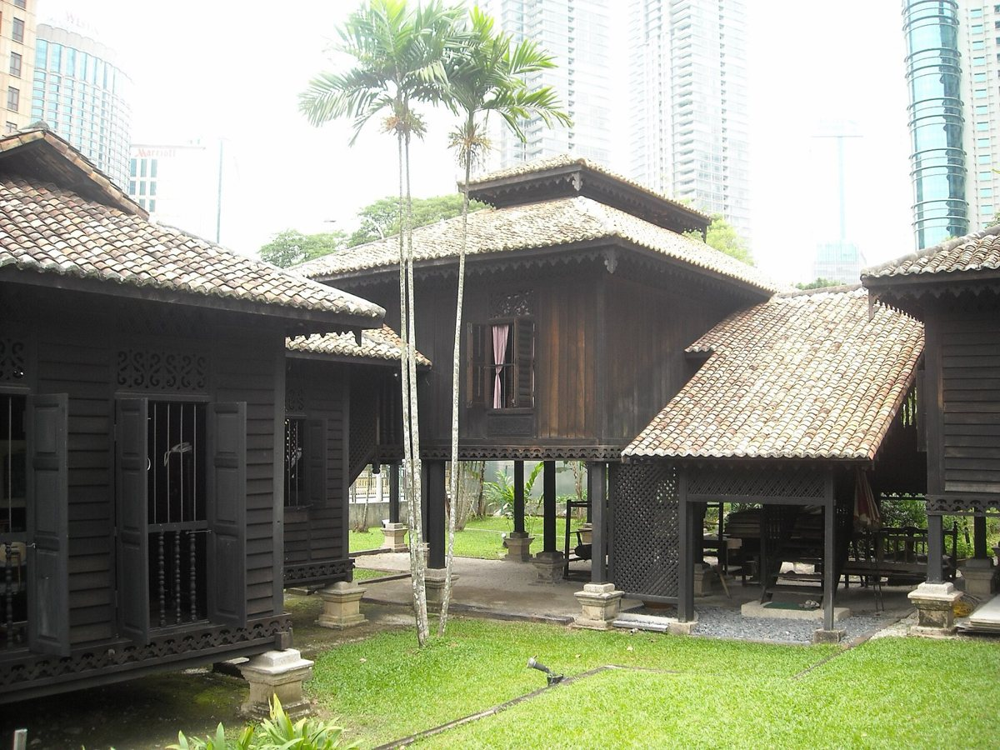
{kind=link}
In Queensland, in the north-east of Australia, the Queenslander grew out of the same needs: catching the breeze, escaping floodwater and keeping termites out of the timber. It stands on stumps, which were raised higher after the great floods of the 1890s. It's built of timber, with an open veranda across the front that often wraps round the sides. And over it sits a pyramid-shaped roof of corrugated iron, with a large, airy roof space above the ceiling that keeps out the summer heat.
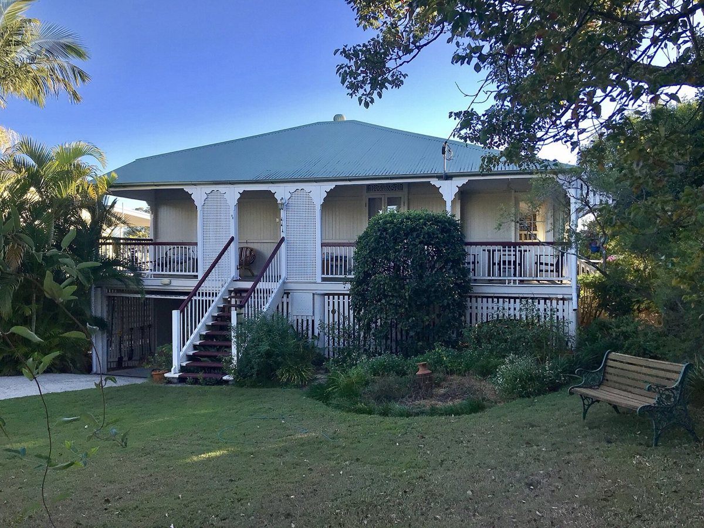
{kind=link}
In India in the 1950s, Le Corbusier made the umbrella into architecture. At the High Court in Chandigarh, opened in 1955, a vast upper roof shades the whole building like a parasol, and the air flows freely through the gap between it and the roof below. In Ahmedabad, the Villa Shodhan has a flat concrete parasol roof over the whole house, and deep sun-breakers shade its walls.
.jpg){kind=link}
Also in Ahmedabad, the young Charles Correa designed the Tube House, which won an all-India competition for low-cost housing held by the Gujarat Housing Board in the early 1960s. Each house is a long, narrow tube under a steeply sloping roof. The roof shields the rooms from the sun, and the section is shaped so that hot air rises along the underside and escapes at the top, drawing fresh air in behind it. It's a clear idea and worth borrowing, though as far as I know, nobody has published measurements of how well it works.
Rules of thumb
One. Protect the roof first. Near the equator it takes more sun than any other surface, every month of the year, and about twice as much as an east or west wall.
Two. Make the roof an umbrella, not a hat: a light, reflective top, a ventilated space beneath it that is open at the ends or the ridge, reflective foil under the roof facing down into that space, and insulation on the ceiling. A white or cool roof reflects 60 to 90 per cent of the sunlight, where a dark one reflects as little as 5.
Three. Stretch the plan from east to west. Keep the east and west walls short, solid and shaded, and open the long north and south sides to the breeze, under deep eaves.
Four. In the humid tropics, build light and open. Lift the floor, make the openings tall, and keep the rooms one room deep, so the air can pass straight through. Save heavy walls for climates with cool nights.
Five. Shade the walls as well as the roof. Verandas and deep eaves keep the sun off the walls, and they keep off the driving rain.
Where it fails
A light, open house can't make the air much cooler than the shade outside. Measure a traditional Malay house and you find that it stays within about a degree of the outdoor temperature by day, and runs a degree or two warmer at night once the shutters are closed, as its roof and walls give back the day's heat. That's why it depends on moving air. On a still, humid afternoon it struggles, and a ceiling fan earns its keep.
Cool paint on a roof is easy to oversell. On a bare metal roof in Malang, in Indonesia, it made the underside of the roof more than six degrees cooler, but the air at the height of a seated person less than one degree cooler. What you feel is less heat radiating down on you, not cooler air. A cool roof matters most when nothing else stands between the roof and the people: no insulation and no ventilated space.
And a parasol roof shades the roof, not the walls. At the High Court in Chandigarh, the open arcade beneath the great roof let in the summer heat and the monsoon rain, and a continuous veranda had to be added.
Recap
To sum up. Near the equator the sun is high all year, so the roof takes the most, about twice as much as an east or west wall. Make the roof an umbrella: reflective on top, ventilated underneath, with foil beneath it and insulation on the ceiling. In the humid tropics, keep the walls light, shaded and open, stretch the plan from east to west, and remember that comfort there comes from shade and moving air.
Check yourself
First question. Near the equator, which surface of a building gets the most sun on a clear day, and roughly how much more than an east wall?
The roof, about twice as much.
Second question. Why does a metal roof with a ventilated space below it keep a room cooler than the same roof laid straight onto the ceiling?
Because the moving air carries away much of the roof's heat before it reaches the ceiling, so the ceiling stays cooler and sends less heat down onto the people.
Third question. A client in Kuala Lumpur wants thick concrete walls to keep the house cool. What would you advise?
In the humid tropics the nights stay warm, so heavy walls store the day's heat and give it back at night. Put the effort into the roof, and keep the walls light, shaded and open to the breeze.
Sources and further reading
- Sunlight on each face: computed for this lesson with the ASHRAE clear-sky model at 3.1 degrees north, for every month. Hazy tropical skies weaken the direct sun and add diffuse light; the roof, which sees the whole sky, still leads.
- Roof temperatures and reflectance: US Environmental Protection Agency, Reducing Urban Heat Islands: Compendium of Strategies, Cool Roofs; Lawrence Berkeley National Laboratory, Heat Island Group.
- Ventilated roofs and radiant barriers: Australian Government, Your Home, Passive cooling; US Department of Energy, Energy Saver, Radiant barriers, including foil placed face down under the roof; Architecture 2030, 2030 Palette, Double roof.
- Plan and orientation in the tropics: Victoria and Albert Museum, What is tropical modernism?; UN-Habitat, Sun Shading Catalogue, and Sustainable Building Design for Tropical Climates (2014); M. Fry and J. Drew, Tropical Architecture in the Dry and Humid Zones (1964).
- The Malay house: National Heritage Board, Singapore; Badan Warisan Malaysia, Rumah Penghulu Abu Seman; D. H. C. Toe and T. Kubota, Solar Energy 114 (2015); N. S. Nik Hassin and A. Misni (2021).
- The Queenslander: State Library of Queensland, Architectural features of the Queenslander.
- Chandigarh and Ahmedabad: High Court of Punjab and Haryana, The building; UNESCO World Heritage List, 1321; Fondation Le Corbusier, Villa Shodhan.
- The Tube House: Charles Correa Foundation, Tube Housing; Praemium Imperiale, Charles Correa; Architectuul, Tube Housing; research edition, chapter 4.
- The cool roof in Malang: Citraningrum and colleagues, measurements of August 2023, as recorded in the research edition, chapter 6, and their SBCC presentation.
- Further reading: O. Koenigsberger and colleagues, Manual of Tropical Housing and Building, Part 1: Climatic Design (1974).
1.5 Room for the sun Spacing buildings and streets so each gets its share
Walk down a street of row houses on a winter afternoon. The houses on one side face south, and their fronts are in full sun: the steps are warm, the windows bright, and a cat is asleep on a sill. The houses opposite face north, into their own shadow, and they'll stay in it until March. Now imagine the street half as wide, or the houses across it twice as tall. The sunny side would lose its sun too, because the shadow of the row across the street would reach over and climb its walls. How far apart buildings stand decides who gets the winter sun.
Everything in this chapter so far has assumed your building can see the sky. In a town it has to share the sky with its neighbours. This last lesson on the sun is about that sharing: how long shadows really are, how far apart buildings need to be, which way the streets should run, and the rules that cities and architects have written so that one building doesn't steal its neighbour's sun.
How it works
A shadow is simple geometry. Its length is the height of whatever casts it, multiplied by a number that depends only on how high the sun is. At Boston's latitude, at noon on the shortest day, the sun stands 24 degrees up, and every shadow is about 2.2 times as long as the thing that casts it. A two-storey house 8 metres tall throws a shadow nearly 18 metres long. At noon in June, the same house casts a shadow only a third of its height.
The number grows fast as you go toward the poles. At 30 degrees north, in Cairo or New Orleans, the December noon shadow is about 1.3 times the height. At 40 degrees it's twice the height. At 50 degrees, around Prague or London, it's more than three times. And at 60 degrees, in Oslo or Helsinki, it's nearly nine times.
Noon also gives the shortest shadow of the day. Before and after, the sun is lower, and the shadows stretch out and swing round toward the north-west in the morning and the north-east in the afternoon. On a clear December day at Boston's latitude, a south wall gets about two-thirds of its day's sunlight between ten and two, and nearly nine-tenths between nine and three. To give a building those middle four hours, the building to its south has to stand back about 2.6 times its own height, not 2.2.
That gives you three levers. You can space buildings further apart. You can run the streets so that buildings face the sun and shade each other as little as possible. And you can shape the buildings themselves, keeping them low where their shadows fall on the neighbours and letting them rise where they don't.
The best examples
You met the first example in lesson one. At Olynthus the long blocks run east and west, each split down the middle by a narrow alley running the same way. That let most houses put their courtyards on their south sides, open to the winter sun.
Village Homes, in Davis, California, planned by Michael and Judy Corbett and built from 1975, applied the same idea to a modern neighbourhood of about 240 houses. Every street runs east and west, so every lot runs north and south, and every house can turn its main windows to the south. The streets are narrow, under 25 feet wide, curving and lined with trees. Between the backs of the houses run shared gardens, orchards and shallow creek beds that carry the rainwater instead of storm drains.
In Germany in the late 1920s, architects chose the opposite orientation on purpose. At Dammerstock in Karlsruhe, where Walter Gropius was the artistic director, and at Westhausen in Frankfurt, under Ernst May, long parallel rows of flats run north and south, so every flat faces east and west. The aim was fairness and fresh air: every flat got morning sun in its bedrooms and evening sun in its living room, and nobody was left on a north side. The rows stand well apart, with strips of garden between them. And in 1930 Gropius showed that if you keep the angle of light between the rows the same, taller rows set further apart house the same number of people as low rows packed close together, on less land.
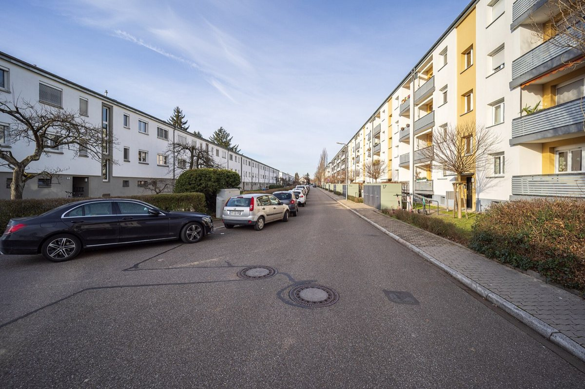
.jpg){kind=link}
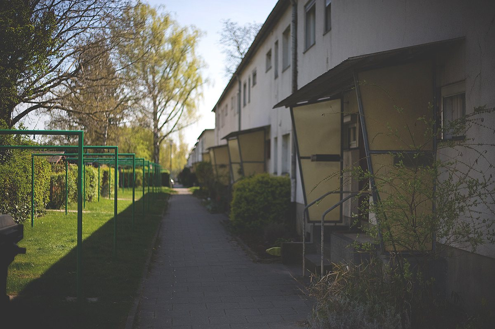
{kind=link}
In Los Angeles, from the 1970s, the architect Ralph Knowles turned the question around. Instead of asking how far apart buildings must be, he asked how big a building could be on its lot without shading the neighbours. His answer was the solar envelope: the largest volume you can build that casts no shadow beyond the site, above an agreed height on the neighbours' boundaries, during chosen hours. In his Los Angeles studies those hours were ten to two in winter and eight to four in summer. The envelope is low on the sides where its shadows would fall on neighbours, and rises toward the sides where they fall on the street. Tested downtown, such envelopes still held 80 to 100 dwellings an acre, which is real city density.
In 1982, Boulder, Colorado, wrote a version of this into law. Its solar access rules imagine a fence along each property line, 12 feet high in the lower-density neighbourhoods and 25 feet in the denser ones. A new building may not shade its neighbour more than that fence would, during the four hours around noon on the shortest day.
And the best-known ancestor of these rules stands in New York. In 1915 the Equitable Building rose straight up from its lot in lower Manhattan, with no setbacks, and its shadow fell across several blocks. The city's zoning resolution of 1916 answered with height limits tied to the width of the street, and above them setbacks: a building's upper floors had to step back as it rose, to let some sun down into the streets. That rule gave New York the stepped skyline of the 1920s.
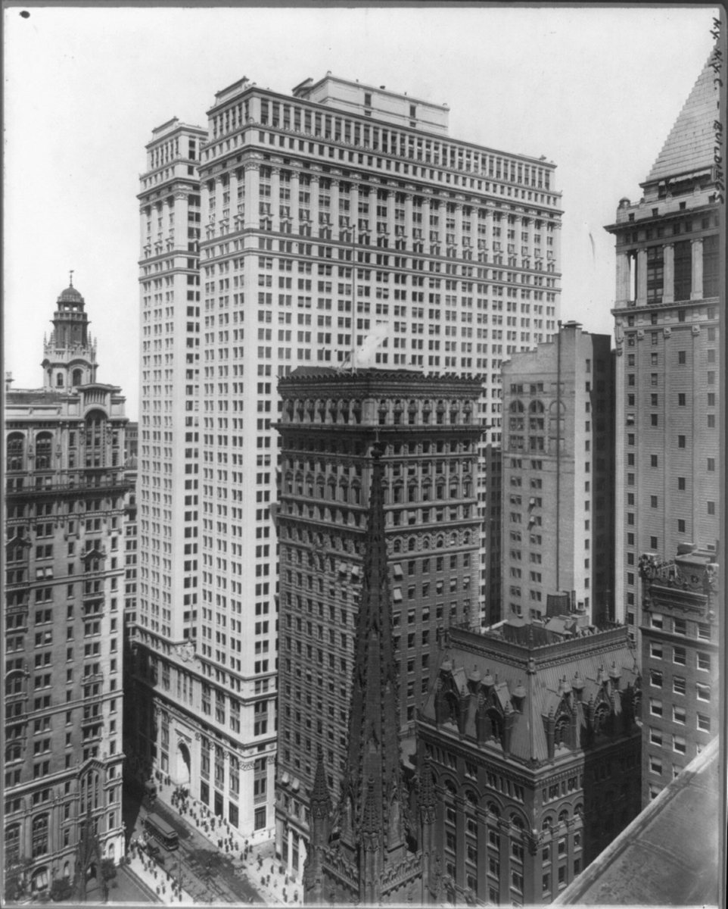
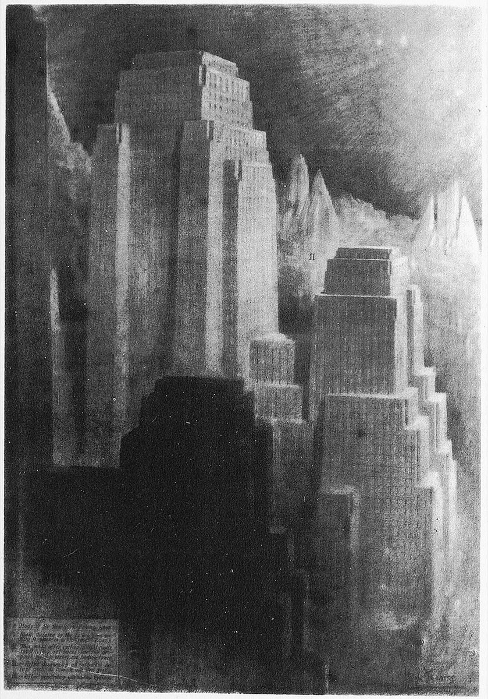
{kind=link}
Rules of thumb
One. Run streets east and west where you can, so that lots run north and south and every building can face the equator.
Two. Space rows by the winter sun. At Boston's latitude, a building's December noon shadow is about 2.2 times its height, and for four hours of sun in the middle of the day, allow about 2.6 times. Toward the equator the numbers shrink; toward the poles they grow quickly.
Three. Put the height on the north side of a site, and the gardens, parking and low buildings on the south, so that shadows fall on your own land.
Four. In a city, protect a height, not the ground. Full winter sun on every ground floor is impossible at city densities, so protect the neighbours' roofs and upper walls, as Boulder's fences do.
Five. For open spaces, borrow the British rule: at least half of a garden, courtyard or square should get two hours of sun or more at the equinox.
Where it fails
The first limit is latitude itself. At Boston's latitude, spacing for the winter sun is possible. North of about 55 degrees, the December noon shadow is five or more times the height of whatever casts it, and nobody can space a town that far apart. There you aim for the roofs and upper floors, and for the spring and autumn sun.
The second limit is that equal sun isn't the same as useful sun. The German rows gave every flat a fair share, but it was east and west sun: little help in winter, and low, hard-to-shade heat in summer, as you saw in lesson two. And the wide, sunny spacing between rows of slab blocks, copied all over the world, became a problem in hot climates, where streets and buildings that shade each other are exactly what you want. That's a lesson for the last chapter.
Recap
To sum up. A shadow's length is the height of what casts it, times a number set by the sun's height: about 2.2 at noon in December at Boston's latitude, less toward the equator and much more toward the poles. Run streets east and west, space rows by the winter sun, and shape buildings so that their shadows fall on their own land. Where the city is dense, protect the neighbours' roofs and upper floors, as the solar envelope and the solar fence do.
Check yourself
First question. At Boston's latitude, how long is the December noon shadow of a house 8 metres tall?
Nearly 18 metres, about 2.2 times its height.
Second question. Which way should streets run so that every house can face south?
East and west, so that the lots run north and south.
Third question. What does a solar envelope define?
The largest volume you can build on a site without shading the neighbours above an agreed height during chosen hours, such as ten to two in winter.
Sources and further reading
- Shadow lengths, reaches, and the share of a December day's sun between ten and two: computed for this lesson from solar geometry and the ASHRAE clear-sky model.
- Olynthus: Perseus Digital Library, Olynthus; the Olynthos Project, University of Michigan; Fitzjohn and Wilson (2025).
- Village Homes: M. Francis, "Village Homes: A Case Study in Community Design", Landscape Journal (2002); City of Davis, Davis history.
- Dammerstock and Westhausen: Badische Landesbibliothek, Siedlung Dammerstock; Ernst-May-Gesellschaft, Siedlung Westhausen; Detail, Vom Sanatorium zum Zeilenbau. W. Gropius, "Flach-, Mittel- oder Hochbau?", in Rationelle Bebauungsweisen (Frankfurt, 1931).
- The solar envelope: R. L. Knowles, The Solar Envelope, University of Southern California; Energy and Form (MIT Press, 1974); Sun Rhythm Form (MIT Press, 1981); "The solar envelope: its meaning for energy and buildings", Energy and Buildings 35 (2003).
- Boulder: City of Boulder, Solar Access Guide; Boulder Revised Code, section 9-9-17.
- New York: the 1916 Zoning Resolution, NYC Department of City Planning; the Skyscraper Museum; NYC Landmarks Preservation Commission, 120 Broadway.
- The garden rule: P. J. Littlefair and others, Site Layout Planning for Daylight and Sunlight, BRE (BR 209).
- Further reading: R. L. Knowles, Ritual House (2006); G. Z. Brown and M. DeKay, Sun, Wind and Light.